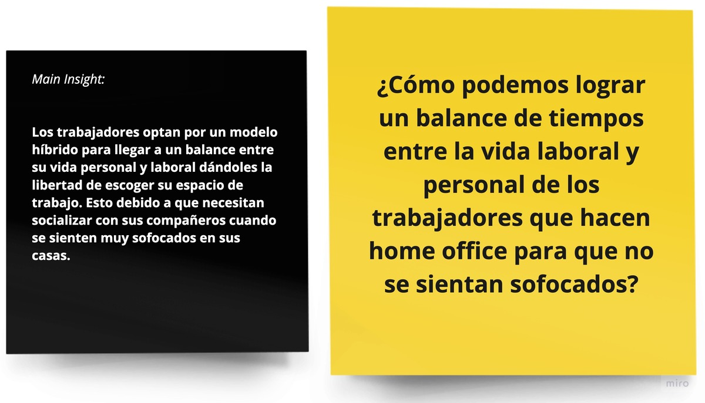

Debido a la pandemia la forma de trabajo en oficina a cambiado y ahora los trabajadores tienen que laborar desde sus casas y en algunas casos de forma hibrida. ¿Cómo las empresas se pueden adaptar a la nueva normalidad para mejorar la experiencia de sus trabajadores?
UTEC - Curso Lean UX
3 Semanas
Research - Ideacion - Testing
Lean UX
Debido a la pandemia la forma de trabajo en oficina a cambiado y ahora los trabajadores tienen que laborar desde sus casas y en algunas casos de forma hibrida. ¿Cómo las empresas se pueden adaptar a la nueva normalidad para mejorar la experiencia de sus trabajadores?
Trabajamos bajo la metodologia Lean UX enfocandonos inicialmente en la investigación de usuarios para luego sintetizar nuestros hallazgos, generar 2 propuestas de solucion y pasar rapidamente a iterar con los usuarios ideas
D e s c u b r i r
Ya que nuestro tiempo de investigacion era corto iniciamos crando un arquetipo de persona que nos sirviria de base para nuestras entrevistas con usuarios.
Teniendo en cuenta nuestro arquetipo Se realizo 4 entrevistas a profundidad, 3 test de usabilidad
Luego de hacer las entrevistas con nuestros usuarios procedimos a clusterizar nuestra información encontrando los siguientes hallazgos:
Relajación
Los trabajadores necesitan socializar con sus familiares y amigos.Transporte
Los trabajadores usan 1 hora al día en promedio para trasladarse hacia su centro de trabajo y volver a casa.Tiempo libre
Los trabajadores en su tiempo libre realizan actividades físicas y sociales.Salud
Los trabajadores ven afectada su salud mental y física debida a la carga laboral.Regresar a las oficinas
Los trabajadores optarían por un modelo híbrido de trabajo.Presión
Los trabajadores valoran su espacio personal.Tecnologia
Los trabajadores valoran tener un internet estable.Beneficios
Los trabajadores valoran que la empresa les otorgue distintos tipos de incentivosE m p a t i z a r
Con toda la información recolectada en estrevistas pudimos trazar el camino que recorre nuestro usuario.
I d e a c i ó n
Una vez que el equipo entendió a fondo los objetivos del proyecto, comenzamos a colaborar estrechamente y a desarrollar una solución.
Comenzamos haciendo una lluvia de ideas dividiendolas en 3 categorias (ideas de un sol, ideas millonarias e ideas locas). Para obtener mucho mas ideas usamos el ejercicio de crazy 8's, asi logramos obtener nuestras 2 propuestas de solución.
Ideas locas + de 1 sol
Nuevas Reglas para Home Office Crear un app que contenga las nuevas reglas de home office para todos.
Millonaria Espacio de trabajo
Espacios híbridos Diseñar oficinas más flexibles en las que cada espacio pueda ser adaptado según las necesidades y presupuesto de la empresa.
Click en las imagenes para ampliar
Luego de sintetizar las ideas, procedimos a presentar estos 2 conceptos (FlexApp y FlexPlace) para recaudar información sobre cual de las propuestas era la que mas satisfacia sus necesidades.
Concepto 1: FlexApp
Target: Trabajadores de home office a tiempo completo
Descripción del prototipo:
“Crear un app que contenga las nuevas reglas de home office para todos”.Imagen referencial del prototipo
Que dicen los usuarios:
Concepto 2: FlexPlace
Target: Trabajadores de home office y presencial
Descripción del prototipo:
“Remodelar las oficinas en ambientes flexibles para los trabajadores”.Imagen referencial del prototipo

Que dicen los usuarios:
😃 Tener todo lo mas cercano para tener comodidad para trabajar.
😃 Ayuda a la creatividad.
😉 Cubo de ideas.
😍 Le gusta la zona para trabajar en equipo y otros donde esta sola.
🤔 El espacio pet friendly sería todos los días?
😍 Le gustan las áreas verdes en la oficina.
😉 Tener un espacio para tomar un cafe o comer una fruta.
😇 Tranquiliza y anima a las personas.
😃 Parecido a los ambientes de trabajo de google.